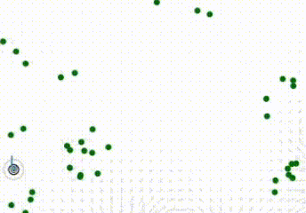
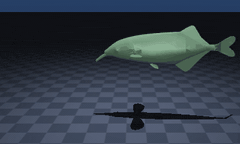
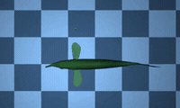
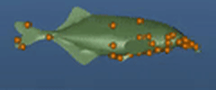

Weakly electric fish collectives
Multi-agent RL agents that sense their surroundings and signal to each other with self-generated electric fields, modeled on weakly electric fish. A 3D biomechanical body model is in progress.



RLDM 2025, spotlight talk · NeurIPS 2025 workshop